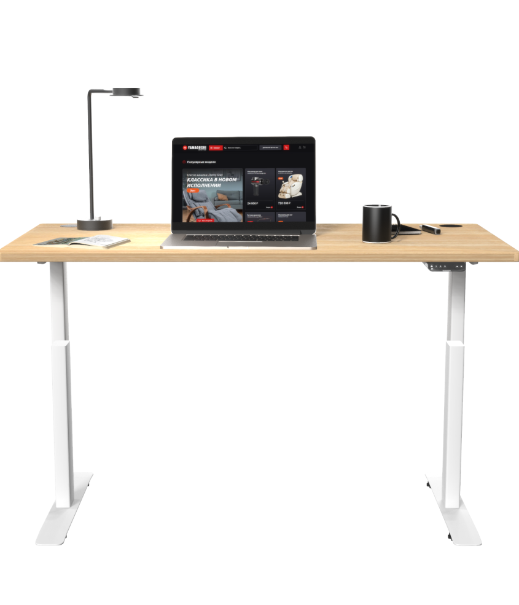

Также столешница, обладающая меламиновым покрытием, хорошо переносит механические воздействия (царапины или удары), при контакте с водой не разрушается, устойчиво переносит бытовые химические вещества и не выгорает под воздействием ультрафиолета.
Эргономика — ключ к успеху современного человека
Cтильная столешница , выполненной из экологически безопасного материала (ДСП), и усиленной стальной рамы не составит труда разместить на поверхности инновационного стола большое количество крупногабаритной техники: стол выдерживает нагрузку до 80 кг.
Также столешница, обладающая меламиновым покрытием, хорошо переносит механические воздействия (царапины или удары), при контакте с водой не разрушается, устойчиво переносит бытовые химические вещества и не выгорает под воздействием ультрафиолета.